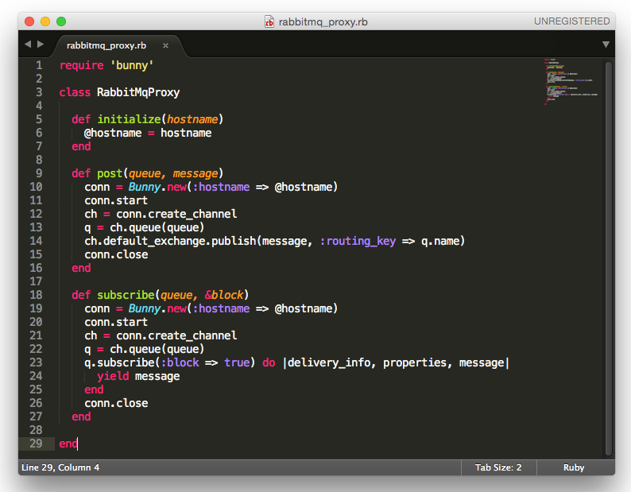

Scaling Services with Choreography
ThoughtWorks Australia XConf 2016
Be afraid of the Death Star
https://twitter.com/adrianco/status/441883572618948608
Dealing with business processes that stretch across
the boundary of individual services is hard
Scale what?
Architecture for Scale
Architecture for Scale [cont.]
Choreography vs orchestration
Dancers interact with their environment, while the orchestra follows the conductor.
Sydney Symphony Orchestra and Sydney Dance Company in the production Elektra (Source: The Australian)
Orchestration
Choreography
Not Choreography
What makes it scary
Architecture
- Asynchronous
- No standard, many patterns
- Definition & discovery
- Clever pipes (ESBs?!?)
Operations
- Monitoring
- Versioning
- Failure & recovery
- Scale
- Speed
Technology
Message Feeds
- RSS/Atom - A standard for publishing machine & human consumable web content
- Data - headlines, articles, blog entries, tweets
- Metadata - tag, author, copyright, date
RSS Example
Message Queues
- Enterprise - Websphere MQ, OEMS (JMS)
- Open Source - RabbitMQ, ActiveMQ (AMQP)
- Distributed - ZeroMQ (libzmq), Kestrel
RabbitMQ & AMQP
Connection, Channel, Exchange, Queue

https://www.rabbitmq.com/tutorials/amqp-concepts.html
Example
https://github.com/jeandamore/xconf-services/blob/master/demo/email-service/lib/rabbitmq_proxy.rb
Message Brokers
- Log data stores - Apache Kafka, DistributedLog
- Streaming systems - Amazon Kinesis, Kafka Streams
How fast
https://blog.insightdatascience.com/ingestion-comparison-kafka-vs-kinesis-4c7f5193a7cd#.s3ex81ith
Implementation
Discovery
API Management with Consul
Dependencies
Dependency Management with Pact Broker
https://github.com/bethesque/pact_broker
Dependencies [cont.]
Configuration
Orchestration
{
:account_service => 'account-service-v1.2.0',
:email_service => 'email-service-v2.2.0'
}
Choreography
{
:broker => 'rabbitmq',
:queue => 'registered-v1.1.0'
}
Dependencies [cont.]
RabbitMQ Management Console
| Dicovery | Dependency | Versioning | Recovery | Scale | Speed | |
|---|---|---|---|---|---|---|
| Orchestration (e.g. REST/HTTP) |
||||||
| Web Feeds (e.g. Atom) |
||||||
| Message Queues (e.g. RabbitMQ) |
||||||
| Log Data Stores (e.g. Kafka) |
||||||
| Event Streams (e.g. Kinesis) |
Conclusion
- No scale -> no choreography
- No choreography -> no scale